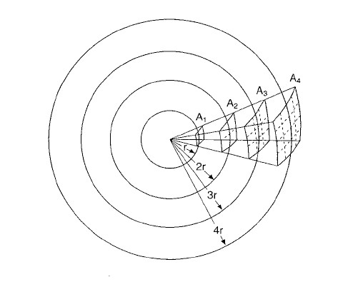

- Per alti \nu, il timpano e gli ossicini collegati (martello, incudine, staffa) hanno un’inerzia che gli impedisce di oscillare rapidamente.
- Ma anche se potessero oscillare a qualsiasi frequenza, la membrana basilare e le cellule ciliate all’interno della coclea non riuscirebbero comunque a tradurre il segnale meccanico in un impulso nervoso chiaro
- A basse \nu, il nostro orecchio non ha una struttura efficiente per tradurre le vibrazioni in segnali neuronali
Fisica – Lezione 7
Onde sinusoidali, decibel
Maurizio Tomasi (maurizio.tomasi@unimi.it)
Martedì 18 novembre 2025
Introduzione all’argomento di oggi
Oggi spiegheremo approfonditamente il tipo più semplice di onda: l’onda sinusoidale
Descriveremo le tre proprietà delle onde sinusoidali: frequenza, sfasamento ed ampiezza
Introdurremo il concetto di “intensità del suono”
Parleremo di come si misura l’ampiezza di un’onda, e introdurremo le potenze e i logaritmi
Inquisitori accademici onorari
Onde sinusoidali
La settimana scorsa abbiamo introdotto il concetto di “onda sinusoidale”
Dell’equazione
\text{oscillazione} = A \sin (2\pi\nu t + \varphi),
a noi interesseranno questi parametri:
- La sua ampiezza (quanto la pressione varia), indicata solitamente con A
- La sua frequenza (quanto rapidamente oscilla), indicata con \nu o con f
- La sua fase (a che istante l’onda raggiunge il suo massimo), indicata con \varphi
1. La frequenza
Percezione della frequenza
Un esempio di suono (ossia, di onda periodica regolare) è la nota emessa da uno strumento, ad esempio un violino
L’essere umano è in grado di percepire suoni la cui frequenza sta nell’intervallo
20\,\text{Hz} < \nu < 20\,\text{kHz},
ma i valori cambiano con l’età: invecchiando, la frequenza udibile più elevata decresce fino a raggiungere valori intorno a 15, e anche meno.
Perché questi limiti?

Curve isofoniche
Il cervello umano non percepisce tutte le frequenze con la stessa sensibilità
Le cosiddette curve isofoniche rappresentano l’intensità percepita in funzione della frequenza e dell’intensità oggettiva (che definiremo in seguito)
Esse sono state ricavando facendo sentire un suono ad una frequenza di riferimento alternato ad un altro suono e aumentando o diminuendo il volume del secondo finché non fosse stato intenso quanto il primo, registrando a questo punto l’ampiezza effettiva. Si è poi ripetuto variando l’intensità del suono di riferimento
Curve isofoniche
- Asse x: frequenza del suono in Hz.
- Asse y: Ampiezza dell’onda di pressione.
- Le varie curve indicano diverse intensità dell’onda di riferimento, dalla soglia di udibilità alla soglia del dolore.

Ultrasuoni
I suoni con una frequenza superiore a 20 kHz sono detti ultrasuoni, e non sono udibili dall’uomo.
Sono però percepibili da alcuni animali:
- I cani, per cui esistono fischietti agli ultrasuoni
- I pipistrelli, che usano l’eco degli ultrasuoni per orientarsi (vedremo meglio l’eco in futuro)

2. Sfasamento
Sfasamento di un’onda
Dobbiamo ora parlare del termine \varphi nell’equazione dell’onda sinusoidale:
\text{oscillazione} = A \sin (2\pi\nu t + \varphi),
Abbiamo accennato al fatto che sia un angolo, e quindi si misura in gradi
Concettualmente esso rappresenta il momento in cui si inizia a misurare l’onda in un certo punto, e dice se ci troviamo al momento del massimo di pressione, del minimo, etc.
Valori di φ
| φ | Significato | % |
|---|---|---|
| 0° | Pressione di equilibrio, crescente | 0% |
| 90° | Massima pressione | 25% |
| 180° | Pressione di equilibrio, decrescente | 50% |
| 270° | Minima pressione | 75% |
3. Ampiezza
Ampiezza di un’onda
Passiamo ora a discutere il senso dell’ampiezza A:
\text{oscillazione} = A \sin (2\pi\nu t + \varphi),
Come avevamo già accennato, per un’onda acustica in un fluido come l’aria o l’acqua, l’ampiezza A può essere misurata in Pascal (pressione) o in kg/m³ (densità)
In un mezzo solido come un muro invece l’ampiezza è uno spostamento, e si misura in metri (ma tipicamente lo spostamento è minore di un millesimo di mm!)
Variazione dell’ampiezza
Immaginate di essere in un prato e di lanciare un urlo
Chi è vicino a voi sentirà il vostro grido con grande intensità
Ma, allontanandosi, il suono sarà sempre più debole
Sapete spiegare il perché?
Ampiezza, potenza, intensità
Un’onda, come già sappiamo, trasmette energia
La “potenza” di un’onda è legata all’energia trasmessa nell’unità di tempo, e si misura in Watt
Però un’onda non è una particella ma qualcosa di esteso, e quindi è più appropriato parlare di una potenza W distribuita su una superficie S. Questa è l’intensità sonora I:
I = \frac{W}{S}
che si misura in W/m² (Watt per metro quadro).
Ampiezza e intensità
Ricordate la definizione di pressione? L’avevamo dovuta introdurre per quei casi in cui una forza F non è applicata su un solo punto, ma viene “diluita” perché applicata su tanti punti (= una superficie S).
Il concetto dell’intensità è lo stesso: l’energia di un’onda si propaga investendo una superficie, e l’intensità misura la “diluzione” della potenza associata.
È precisamente a causa di questa diluizione che il Sole scalda la Terra di più in estate e di meno in inverno (quando è più inclinato), come mostrato nella slide successiva. (La luce è infatti un’onda elettromagnetica).
Ampiezza e intensità
L’intensità non è l’ampiezza, ma ad essa è strettamente legata
Esiste infatti una relazione, tra la pressione P di un’onda e la sua intensità I:
I = \frac12\frac{P^2}{\rho v_\text{suono}},
dove \rho è la densità dell’aria.
Non spiegheremo questa relazione; notate però che è qualitativamente simile a E_c = \frac12 m v^2
Variazione dell’ampiezza
Il motivo per cui il suono propagandosi si attenua ha a che fare principalmente con la conservazione dell’energia
L’urlo nasce dalla vostra bocca, che ha una piccola superficie. Ma il suono si propaga ovunque nello spazio (anche verso l’alto), e l’energia sonora deve necessariamente “diluirsi” sulla superficie 4\pi r^2 di una sfera sempre più grande.
Ciò avverrebbe anche in mancanza di attrito e forze viscose!

Interludio: formule
È bene avere presenti alcune formule geometriche legate al cerchio e alla sfera
Supponendo che r sia il raggio (in metri) del cerchio o della sfera, valgono queste proprietà:
- Lunghezza della circonferenza: 2\pi r
- Area del cerchio: \pi r^2
- Superficie della sfera: 4\pi r^2
- Volume della sfera: \frac43 \pi r^3
Trucchi mnemonici
Per ricordare le formule, tenete presente le unità di misura: le lunghezze hanno r, le superfici r^2, ed i volumi r^3!
Per distinguere l’area del cerchio (\pi r^2) dalla superficie della sfera (4\pi r^2), ricordate che la superficie di una mela (sfera) è esattamente quattro volte la superficie interna (cerchio) quando la dividete in due
Legge dell’inverso del quadrato
In un caso ideale, l’intensità dell’onda sonora varia come l’inverso del quadrato della distanza r. Se quindi due persone misurano un’intensità I_1 e I_2 a due distanze r_1 e r_2, vale che
I_1\times 4\pi r_1^2 = I_2\times 4\pi r_2^2.
La formula è più utile semplificando 4\pi e risolvendo per I_2:
I_2 = I_1\times\frac{r_1^2}{r_2^2}.
Esempio
- Una persona è seduta in prima fila a 3 m dal professore (r_1 = 3\,\text{m})
- Un’altra persona è seduta più dietro, a 9 metri dal professore (r_2 = 9\,\text{m})
- Se l’orecchio della prima persona riceve un suono di intensità I_1, la seconda persona riceve un suono di ampiezza I_2 = I_1\times\frac{r_1^2}{r_2^2} = I_1\times\frac{(3\,\text{m})^2}{(9\,\text{m})^2} = I_1\times\frac{9}{81} = \frac{I_1}{9}
Intensità percepita
Possiamo concludere che se la distanza triplica, l’intensità si riduce di un fattore 9, ossia 3²
Questo vuol dire che la seconda persona percepisce la voce del professore 9 volte meno intensa?
(Potete fare la prova, se volete!)
Legge di Weber-Fechner
Il calcolo non è sbagliato: l’intensità diminuisce davvero di un fattore 9
Ma l’intensità non è ciò che misura il nostro orecchio. (Se così fosse, le aule universitarie dovrebbero essere fatte in modo che il professore stia al centro, e tutti gli studenti in cerchio attorno a lui!)
In prima approssimazione, le percezioni sensoriali seguono la cosiddetta “legge di Weber-Fechner”
Il lavoro di Weber
Ernst Weber (1795-1878) scoprì che la variazione di uno stimolo viene percepita in modo differente a seconda dell’intensità iniziale dello stimolo
Weber verificò che se a una persona che regge un peso si aggiunge un ulteriore peso, questa lo percepirà diversamente:
- Aggiungere 100 g ad un carico di 10 kg dà una percezione minima, quasi inavvertibile
- Ma aggiungere 100 g ad un carico di 200 g è invece chiaramente avvertibile!
La conclusione di Fechner
Gustav Fechner (1801-1887) descrisse matematicamente quanto aveva osservato Weber, e derivò la formula
p = k \log_{10} S + C
dove p è la “percezione” (ciò che avvertono i miei sensi), S è lo stimolo (il fenomeno fisico che raggiunge i miei sensi), e k e C costanti che non ci interessano qui.
Anche se la legge di Weber-Fechner è un’approssimazione, è stata importante storicamente per definire il “decibel”. Dovremo quindi capire il funzionamento di \log_{10}, che è l’inverso di una potenza.
Potenze
Per capire i decibel è sufficiente considerare solo le potenze in base 10. Quasi tutto quanto diremo però si applica anche ad altre basi
La potenza n di 10 è definita come
10^n = \underbrace{10 \times 10 \times \ldots \times 10}_\text{$n$ volte}
Esempio: 10^4 = 10 \times 10 \times 10 \times 10 = 10.000
Trucco: il numero n dice il numero di zeri che seguono 1.
Prodotti di potenze
Quando moltiplichiamo tra loro due potenze di 10, il risultato è una potenza di 10 il cui esponente è la somma dei due:
10^n \times 10^m = 10^{n + m}
Questo è banale da dimostrare:
\textcolor{#08a}{10^n} \times \textcolor{#a08}{10^m} = \textcolor{#08a}{\underbrace{10 \times \ldots \times 10}_\text{$n$ volte}} \times \textcolor{#a08}{\underbrace{10 \times \ldots \times 10}_\text{$m$ volte}} = \underbrace{10 \times \ldots \times 10}_\text{$n+m$ volte}
Rapporti tra potenze
Quando si dividono due potenze di dieci, il risultato è una potenza di dieci con esponente la differenza dei due esponenti:
\frac{10^n}{10^m} = 10^{n - m}
Anche in questo caso la dimostrazione è banale:
\frac{10^n}{10^m} = \frac{\overbrace{\cancel{10}\times\cancel{10}\times\ldots\cancel{10}}^\text{$m$ cancellazioni}\times 10\times 10\times \ldots \times 10}{\underbrace{\cancel{10}\times\cancel{10}\times\ldots\cancel{10}}_\text{$m$ volte}} = 10^{n - m}
Altre proprietà
Usando un po’ di logica, si possono estendere queste operazioni anche in altri casi.
Ad esempio, possiamo definire le potenze negative tramite rapporti di potenze. Una potenza come
10^{-4}
può essere vista come
10^{-4} = 10^{1 - 5} = \frac{10^1}{10^5} = \frac{10}{100.000} = 0{,}0001.
Potenza zero-esima
Possiamo anche attribuire un significato alla potenza zero:
10^0
Basta scrivere
10^0 = 10^{1 - 1} = \frac{10^1}{10^1} = \frac{10}{10} = 1
Quindi, il 10 elevato alla zero è uguale per convenzione a 1. (Questo è coerente con il nostro trucco: “10⁰ è uguale a 1 seguito da zero zeri”!)
Potenze frazionarie
Chiediamoci ora che significato dare alla potenza
10^{0{,}5}
Perché la nostra definizione sia coerente con quanto detto sinora, dovremmo fare in modo che le vecchie proprietà valgano anche qui. Quindi, in particolare:
10^{0{,}5} \times 10^{0{,}5} = 10^{0{,}5 + 0{,}5} = 10^1 = 10.
Ma sappiamo già qual è il numero che, moltiplicato per se stesso, è uguale a 10: si tratta della radice quadrata di 10, ossia \sqrt{10} \approx 3{,}162.
Potenze frazionarie
Usando la stessa logica, è possibile dare un senso a qualsiasi esponente: \begin{aligned} 10^{0{,}25} &= \sqrt[4]{10} \approx 1{,}778,\\ 10^{1{,}5} &= 10^1 \times 10^{0{,}5} = 10 \times \sqrt{10} = 31{,}623,\\ \end{aligned}
(la scrittura \sqrt[4]{10} indica quel numero che elevato alla potenza 4 è uguale a 10).
I matematici hanno scoperto che se si definisce questa formula
10^{\frac{n}{m}} = \sqrt[m]{10^n},
le proprietà delle potenze continuano ad essere valide!
Potenze frazionarie
Lavorando con potenze di 10 intere, abbiamo visto che il risultato è sempre 1 seguito o preceduto da zeri:
10^4 = 10.000,\qquad 10^{-2} = 0{,}01
Però quando le potenze sono numeri con la virgola non è più così:
10^{0{,}5} \approx 3{,}162,\qquad 10^{-1{,}7} \approx 0{,}01995.
È possibile scrivere qualsiasi numero come una potenza di 10?
I logaritmi
La risposta è: “un po’ sì, e un po’ no”
Non si può infatti scrivere un numero negativo o lo zero come una potenza di dieci (a meno di non usare strumenti matematici sofisticati, che però non sono rilevanti per questo corso): non esiste un k per cui valga 10^k = -3!
Ma se un numero n è positivo, i matematici hanno mostrato che è sempre possibile scriverlo come una potenza di dieci. L’esponente del dieci è detto “logaritmo in base dieci di n”, e si scrive \log_{10} n
n = 10^{\log_{10} n}.
I logaritmi
Riprendendo i nostri due esempi di prima
10^{0{,}5} \approx 3{,}162,\qquad 10^{-1{,}7} \approx 0{,}01995,
da queste stesse eguaglianze segue che
\log_{10} 3{,}162 \approx 0{,}5,\qquad \log_{10} 0{,}01995 \approx -1{,}7
Ovviamente, le cose sono molto più semplici (ed esatte!) quando abbiamo potenze intere di 10:
\log_{10} 10.000 = 4,\qquad \log_{10} 0{,}00001 = -5.
Significato di log₁₀ (n > 1)
Se osserviamo alcuni logaritmi in base 10, possiamo notare una particolarità:
\log_{10} 1000 = 3,\quad \log_{10} 51.523{,}4 \approx 4{,}712,\quad \log_{10}7.823.552{,}8 \approx 6{,}893
Se un numero maggiore di 1 ha k cifre prima della virgola, il suo logaritmo è sempre tale che
k - 1 \leq \log_{10} n < k
In altre parole, il logaritmo in base 10 può essere anche usato per “contare” le cifre!
Numeri minori di 1
Dal momento che 10^0 = 1, vale allora che
\log_{10} 1 = 0.
Per i numeri positivi che sono minori di 1, il logaritmo è negativo:
\begin{aligned} 10^{-2} = 0{,}01\quad&\Rightarrow\quad\log_{10} 0{,}01 = -2,\\ 10^{-1{,}7} \approx 0{,}01995\quad&\Rightarrow\quad\log_{10} 0{,}01995 = -1{,}7 \end{aligned}
Se un numero è più piccolo di 1, il logaritmo dice più o meno quante cifre ci sono dopo la virgola
Significato di log₁₀ (n < 1)
Vediamo alcuni casi pratici con n < 1:
\log_{10} 0{,}001 = -3,\quad \log_{10} 0{,}054 \approx -1{,}268,\quad \log_{10}0{,}00000852 \approx -5{,}07
Se un numero minore di 1 ha k zeri dopo la virgola, il suo logaritmo è sempre negativo e tale che
-k - 1 \leq \log_{10} n < -k
Anche qui il logaritmo “conta”, ma nella direzione opposta, e stavolta conta gli zeri!
Approssimazioni
Se volete stimare un logaritmo, è possibile arrotondare i numeri: il logaritmo “perdona” facilmente gli arrotondamenti.
L’abbiamo visto proprio negli esempi delle slide precedenti:
\begin{aligned} 10^{-1{,}7} \approx 0{,}01995\quad&\Rightarrow\quad\log_{10} 0{,}01995 = -1{,}7,\\ 10^{-2} = 0{,}01\quad&\Rightarrow\quad\log_{10} 0{,}01 = -2 \end{aligned}
Arrotondando 0.01995 a 0.1 (grande arrotondamento! abbiamo dimezzato il numero!), il risultato −1,7 diventa 2.
Esercizi
Provate a stimare (ad occhio!) il valore del logaritmo di 10 di questi numeri
\begin{aligned} \log_{10} 16.341\qquad &\log_{10} 65.316.732.001\\ \log_{10} 5\qquad &\log_{10} 1\\ \log_{10} 0{,}1\qquad &\log_{10} 0{,}01\\ \log_{10} 0{,}3\qquad &\log_{10} 0{,}089\\ \log_{10} 10{,}35\qquad &\log_{10} 163{,}1\\ \end{aligned}
Proprietà dei logaritmi
Dalle proprietà delle potenze discendono le proprietà dei logaritmi:
\log_{10} \bigl(10^n \times 10^m\bigr) = \log_{10} 10^{n + m} = n + m = \log_{10} 10^n + \log_{10} 10^m.
Lo stesso vale per il logaritmo di una divisione, solo che al posto della somma n + m compare la differenza n - m
Quindi, i logaritmi trasformano i prodotti in somme, e le divisioni in differenze
Esempi
Supponiamo di voler calcolare un prodotto molto complicato:
3.562.512 \times 7.412.559.919
Se passiamo ai logaritmi in base dieci, abbiamo che
\log_{10} 3.562.512 \approx 6{,}?,\qquad \log_{10} 7.412.559.919 \approx 9{,}?
Quindi il logaritmo in base 10 del risultato sarà 6{,}? + 9{,}?, ossia qualcosa tra 15 e 16: il risultato è quindi un numero a 16–17 cifre. Infatti
3.562.512 \times 7.412.559.919 = 26.407.333.662.156.528
Calcoli veloci
Prima che inventassero le calcolatrici, per calcolare prodotti tra grandi numeri si usavano i logaritmi
Si mandavano a memoria i logaritmi in base 10 dei numeri da 1 a 9, e poi si scrivevano i numeri in modo “furbo” per calcolarne più rapidamente i logaritmi. Ad esempio:
\begin{aligned} \log_{10} 351.912 &\approx \log_{10} 350.000 = \log_{10} 3{,}5\times 10^5 = \log_{10} 3{,}5 + \log_{10} 10^5 =\\ &= \log_{10} 3{,}5 + 5 = 0{,}54 + 5 = 5{,}54 \end{aligned}
Una volta calcolati i logaritmi, si sommavano tra loro per ottenere il logaritmo in base 10 del risultato. Con trucchi e regoli calcolatori, dal logaritmo si risaliva al risultato.

Vedi anche l’articolo How slide rules work.
Conclusioni
Cosa sapere per l’esame
- Onde sinusoidali
- Significato della fase
- Ampiezza e intensità sonora
- Potenze e logaritmi in base 10